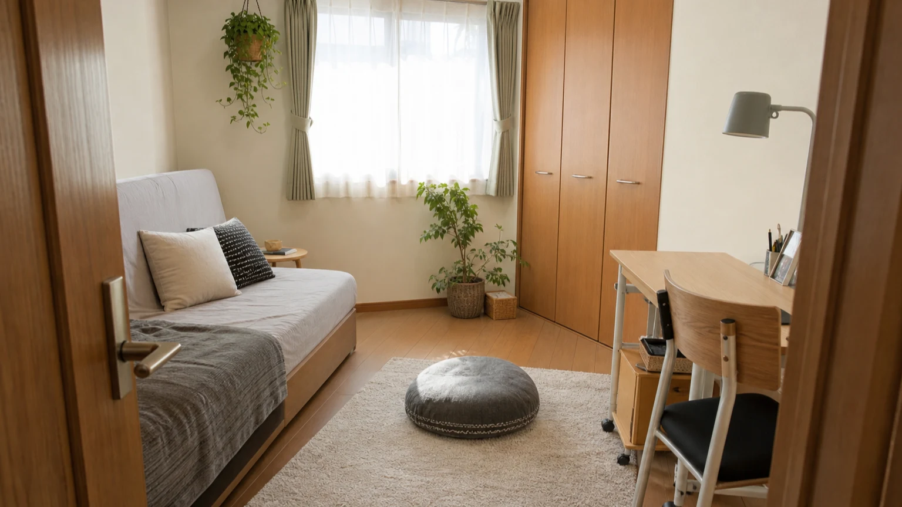
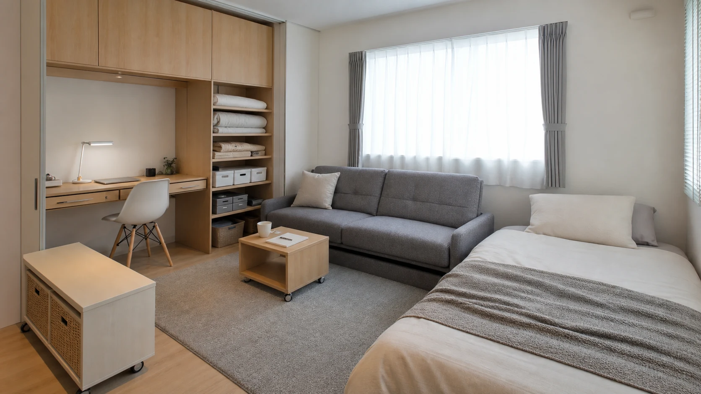
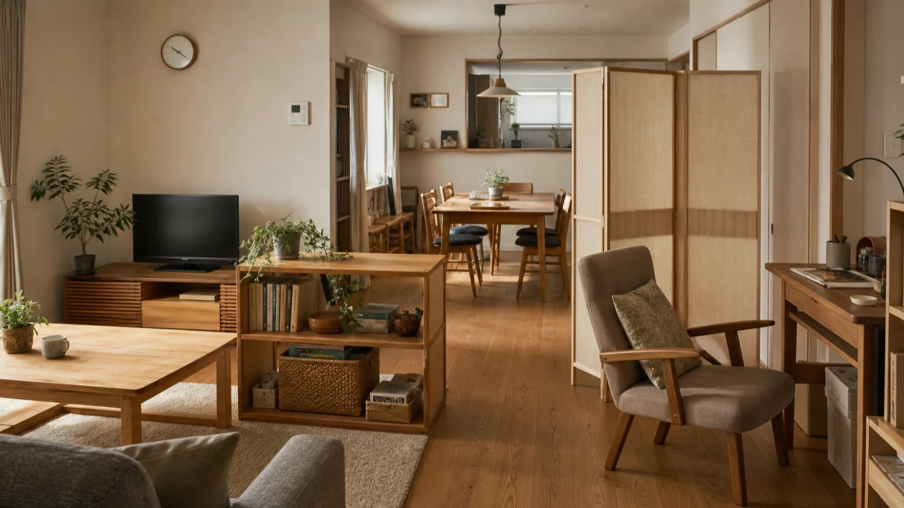

「家族団らんの場所」といえばリビングを思い浮かべる方が多いかもしれません。しかし、家族の集まり方や距離感は、子どもの成長や家族の時期によって変わっていくものです。この記事では、新築の間取り提案ではなく、今ある家をどう使い直すかという視点から、家族のつながり方の変化について考えます。
1. 家族が集まる場所は、時期で変わる
家族がどこでどのように過ごすかは家庭によって異なりますが、子どもが小さい時期、思春期、独立後など、家族の段階に応じて変わることがあります。リビングで一緒に過ごす時期もあれば、自分の部屋で過ごす時間が増える時期や、帰省のタイミングで再び集まる場面もあります。
こうした変化を、家族関係の良し悪しではなく、それぞれの時期に合った「ちょうどいい距離感」を見直す機会として捉えることができます。自分の居場所が家の中にあるか、集まりたいときに自然と集まれる場所があるかを、家族の段階ごとに考えてみましょう。
2. 子育て期の「見守れる距離」
子どもが小さい頃は、親が見守りやすい場所で子どもが過ごせるかを検討することがあります。キッチンから見えるダイニング、リビングに隣接した小上がりスペースなどは、「一緒にいながら、それぞれのことをする」距離感を考える一例です。
この時期の家づくりについては、以前の回（第3回「家族の気配が通う家。子どもと暮らす住まいの考え方」）でも取り上げていますので、あわせてご参照ください。

3. 思春期の「近すぎない距離」
子どもが成長し、自分の部屋で過ごす時間が増えると、「見守る」よりも「見守りすぎない」ことが必要になる場面が出てきます。プライバシーを尊重しつつ、完全に孤立させないバランスが求められる時期です。
具体的には、子ども部屋のドアを開けたときにリビングの気配が感じられる配置にする、共有スペースに家族それぞれが自然と立ち寄れる工夫をするなど、「距離を置きつつ、つながりは残す」という考え方が参考になります。
4. 独立後の帰省を受け止める余白
子どもが独立すると、使われなくなった部屋が生まれます。この部屋を「いつか使うかもしれないから」とそのままにしておくのか、夫婦の趣味や仕事のスペースとして使い直すのかは、家庭によって判断が分かれるところです。
第10回「子どもが巣立ったあと、家はどう変える？──50代から考える夫婦の居場所」でも述べたように、空いた部屋は「誰の部屋か」を固定するのではなく、「どんな使い方を受け止める部屋か」という視点で考えると、帰省時の宿泊スペースと日常の作業スペースを両立させやすくなります。可動式の家具や、しまえる寝具を活用することで、普段使いと来客対応を柔軟に切り替えられます。

5. 既存の家をどう使い直すか
家族の変化に合わせて新築や増築をするのではなく、今ある家の使い方を見直すことで対応できる場合があります。次のような工夫が考えられます。
- 部屋の名前を一度外して考える：「子ども部屋」「客間」といった固定的な呼び方をいったん外し、「今、誰が、どんな時間を過ごす場所か」で考え直す。
- 可動式の間仕切りや家具を活用する：工事を伴わずに、距離感を調整できる工夫を取り入れる。
- 共有スペースと個人スペースのバランスを見直す：家族の人数や過ごし方の変化に応じて、リビングの使い方や、個室の配置を柔軟に考える。
大きな工事をせずとも、家具の配置や部屋の使い方を変えるだけで、家族の「ちょうどいい距離感」を取り戻せることがあります。

6. 今の家の使い方を家族で話す
家族のつながり方は、時間とともに自然と変化していきます。その変化に家のほうを合わせていくためには、まず「今、家族はどんな距離感を求めているか」を話し合うことが出発点になります。
ダイニング、小上がり、多目的室、窓辺の椅子など、家族が立ち寄れる場所はリビング以外にもつくれます。集まる場所を無理に一か所へ限定せず、それぞれの時期に合った「集まり方」「離れ方」を、家族で確認しながら住まいを使い直していきましょう。